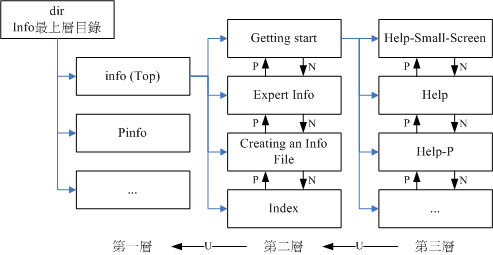

先来了解一下Linux有多少命令呢？在文本模式下，你可以直接按下两个[Tab]按键，看看总共有多少命令可以让你用？
[vbird@www ~]$ <==在这里不要输入任何字符，直接输入两次[tab]按键
Display all 2450 possibilities? (y or n) <==如果不想要看，按 n 离开
|
如上所示，鸟哥安装的这个系统中，少说也有2000多个以上的命令可以让vbird这个账号使用。
那在Linux里面到底要不要背『命令』啊？可以啊！你背啊！这种事，鸟哥这个『忘性』特佳的老人家实在是背不起来
@_@ ～当然啦，有的时候为了要考试(例如一些认证考试等等的)还是需要背一些重要的命令与选项的！
不过，鸟哥主要还是以理解『在什么情况下，应该要使用哪方面的命令』为准的！
既然鸟哥说不需要背命令，那么我们如何知道每个命令的详细用法？还有，某些配置文件的内容到底是什么？
这个可就不需要担心了！因为在Linux上开发的软件大多数都是自由软件，而这些软件的开发者为了让大家能够了解命令的用法，
都会自行制作很多的文件，而这些文件也可以直接在在线就能够轻易的被使用者查询出来喔！很不赖吧！
这根本就是『联机帮助文件』嘛！哈哈！没错！确实如此。我们底下就来谈一谈，Linux到底有多少的在线文件数据呢？
 man page
man page
嗄？不知道怎么使用date这个命令？嘿嘿！不要担心，我们Linux上面的在线求助系统已经都帮你想好要怎么办了，
所以你只要使用简单的方法去寻找一下说明的内容，马上就清清楚楚的知道该命令的用法了！怎么看呢？就是找男人(man)
呀！喔！不是啦！这个man是manual(操作说明)的简写啦！只要下达：『man
date』 马上就会有清楚的说明出现在你面前喔！如下所示：
[vbird@www ~]$ LANG="en"
# 还记得这个咚咚的用意吧？前面提过了，是为了『语系』的需要啊！下达过一次即可！
[vbird@www ~]$ man date
DATE(1) User Commands DATE(1)
# 请注意上面这个括号内的数字
NAME <==这个命令的完整全名，如下所示为date且说明简单用途为配置与显示日期/时间
date - print or set the system date and time
SYNOPSIS <==这个命令的基本语法如下所示
date [OPTION]... [+FORMAT]
date [-u|--utc|--universal] [MMDDhhmm[[CC]YY][.ss]]
DESCRIPTION <==详细说明刚刚语法谈到的选项与参数的用法
Display the current time in the given FORMAT, or set the system
date.
-d, --date=STRING <==左边-d为短选项名称，右边--date为完整选项名称
display time described by STRING, not 'now'
-f, --file=DATEFILE
like --date once for each line of DATEFILE
-r, --reference=FILE
display the last modification time of FILE
....(中间省略)....
# 找到了！底下就是格式化输出的详细数据！
FORMAT controls the output. The only valid option for the second
form specifies Coordinated Universal Time. Interpreted sequences
are:
%% a literal %
%a locale's abbreviated weekday name (e.g., Sun)
%A locale's full weekday name (e.g., Sunday)
....(中间省略)....
ENVIRONMENT <==与这个命令相关的环境参数有如下的说明
TZ Specifies the timezone, unless overridden by command line
parameters. If neither is specified, the setting from
/etc/localtime is used.
AUTHOR <==这个命令的作者啦！
Written by David MacKenzie.
REPORTING BUGS <==有问题请留言给底下的email的意思！
Report bugs to <bug-coreutils@gnu.org>.
COPYRIGHT <==受到著作权法的保护！用的就是 GPL 了！
Copyright ? 2006 Free Software Foundation, Inc.
This is free software. You may redistribute copies of it under the
terms of the GNU General Public License
<http://www.gnu.org/licenses/gpl.html>. There is NO WARRANTY, to
the extent permitted by law.
SEE ALSO <==这个重要，你还可以从哪里查到与date相关的说明文件之意
The full documentation for date is maintained as a Texinfo manual.
If the info and date programs are properly installed at your site,
the command
info date
should give you access to the complete manual.
date 5.97 May 2006 DATE(1)
|
Tips:
进入man命令的功能后，你可以按下『空格键』往下翻页，可以按下『 q 』按键来离开man的环境。
更多在man命令下的功能，本小节后面会谈到的！
|  |
看(鸟哥没骂人！)马上就知道一大堆的用法了！如此一来，不就可以知道date的相关选项与参数了吗？真方便！
而出现的这个屏幕画面，我们称呼他为man page，
你可以在里头查询他的用法与相关的参数说明。如果仔细一点来看这个man page的话，你会发现几个有趣的东西。
首先，在上个表格的第一行，你可以看到的是：『DATE(1)』，DATE我们知道是命令的名称，
那么(1)代表什么呢？他代表的是『一般用户可使用的命令』的意思！咦！还有这个用意啊！呵呵！
没错～在查询数据的后面的数字是有意义的喔！他可以帮助我们了解或者是直接查询相关的数据。
常见的几个数字的意义是这样的：
| 代号 | 代表内容 |
| 1 | 使用者在shell环境中可以操作的命令或可运行文件 |
| 2 | 系统核心可呼叫的函数与工具等 |
| 3 | 一些常用的函数(function)与函式库(library)，大部分为C的函式库(libc) |
| 4 | 装置文件的说明，通常在/dev下的文件 |
| 5 | 配置文件或者是某些文件的格式 |
| 6 | 游戏(games) |
| 7 | 惯例与协议等，例如Linux文件系统、网络协议、ASCII code等等的说明 |
| 8 | 系统管理员可用的管理命令 |
| 9 | 跟kernel有关的文件 |
上述的表格内容可以使用『man 7 man』来更详细的取得说明。透过这张表格的说明，
未来你如果使用man page在察看某些数据时，就会知道该命令/文件所代表的基本意义是什么了。
举例来说，如果你下达了『man null』时，会出现的第一行是：『NULL(4)』，对照一下上面的数字意义，
嘿嘿！原来null这个玩意儿竟然是一个『装置文件』呢！很容易了解了吧！
Tips:
上表中的1, 5, 8这三个号码特别重要，也请读者要将这三个数字所代表的意义背下来喔！
| |
再来，man page的内容也分成好几个部分来加以介绍该命令呢！就是上头man date那个表格内，
以NAME作为开始介绍，最后还有个SEE ALSO来作为结束。基本上，man page大致分成底下这几个部分：
| 代号 | 内容说明 |
| NAME | 简短的命令、数据名称说明 |
| SYNOPSIS | 简短的命令下达语法(syntax)简介 |
| DESCRIPTION | 较为完整的说明，这部分最好仔细看看！ |
| OPTIONS | 针对 SYNOPSIS 部分中，有列举的所有可用的选项说明 |
| COMMANDS | 当这个程序(软件)在运行的时候，可以在此程序(软件)中下达的命令 |
| FILES | 这个程序或数据所使用或参考或连结到的某些文件 |
| SEE ALSO | 可以参考的，跟这个命令或数据有相关的其他说明！ |
| EXAMPLE | 一些可以参考的范例 |
| BUGS | 是否有相关的臭虫！ |
有时候除了这些外，还可能会看到Authors与Copyright等，不过也有很多时候仅有NAME与DESCRIPTION等部分。
通常鸟哥在查询某个数据时是这样来查阅的：
- 先察看NAME的项目，约略看一下这个数据的意思；
- 再详看一下DESCRIPTION，这个部分会提到很多相关的数据与使用时机，从这个地方可以学到很多小细节呢；
- 而如果这个命令其实很熟悉了(例如上面的date)，那么鸟哥主要就是查询关于OPTIONS的部分了！
可以知道每个选项的意义，这样就可以下达比较细部的命令内容呢！
- 最后，鸟哥会再看一下，跟这个数据有关的还有哪些东西可以使用的？举例来说，上面的SEE
ALSO就告知我们还可以利用『info coreutils date』来进一步查阅数据；
- 某些说明内容还会列举有关的文件(FILES 部分)来提供我们参考！这些都是很有帮助的！
大致上了解了man page的内容后，那么在man page当中我还可以利用哪些按键来帮忙查阅呢？首先，
如果要向下翻页的话，可以按下键盘的空格键，也可以使用[Page Up]与[Page Down]来翻页呢！同时，如果你知道某些关键词的话，
那么可以在任何时候输入『/word』，来主动搜寻关键词！例如在上面的搜寻当中，我输入了『/date』会变成怎样？
DATE(1) User Commands DATE(1)
NAME
date - print or set the system date and time
SYNOPSIS
date [OPTION]... [+FORMAT]
date [-u|--utc|--universal] [MMDDhhmm[[CC]YY][.ss]]
DESCRIPTION
Display the current time in the given FORMAT, or set the system date.
....(中间省略)....
/date <==只要按下/，光标就会跑到这个地方来，你就可以开始输入搜寻字符串咯
|
看到了吗，当你按下『/』之后，光标就会移动到屏幕的最下面一行，
并等待你输入搜寻的字符串了。此时，输入date后，man page就会开始搜寻跟date有关的字符串，
并且移动到该区域呢！很方便吧！最后，如果要离开man page时，直接按下『 q 』就能够离开了。
我们将一些在man page常用的按键给他整理整理：
| 按键 | 进行工作 |
| 空格键 | 向下翻一页 |
| [Page Down] | 向下翻一页 |
| [Page Up] | 向上翻一页 |
| [Home] | 去到第一页 |
| [End] | 去到最后一页 |
| /string | 向『下』搜寻 string 这个字符串，如果要搜寻 vbird 的话，就输入 /vbird
|
| ?string | 向『上』搜寻 string 这个字符串 |
| n, N | 利用 / 或 ? 来搜寻字符串时，可以用 n 来继续下一个搜寻 (不论是 / 或 ?)
，可以利用 N 来进行『反向』搜寻。举例来说，我以 /vbird 搜寻 vbird 字符串，
那么可以 n 继续往下查询，用 N 往上查询。若以 ?vbird 向上查询 vbird 字符串，
那我可以用 n 继续『向上』查询，用 N 反向查询。 |
| q | 结束这次的 man page |
要注意喔！上面的按键是在man page的画面当中才能使用的！
比较有趣的是那个搜寻啦！我们可以往下或者是往上搜寻某个字符串，例如要在man page内搜寻vbird这个字符串，
可以输入 /vbird 或者是 ?vbird ，只不过一个是往下而一个是往上来搜寻的。而要
重复搜寻 某个字符串时，可以使用 n 或者是 N 来动作即可呢！
很方便吧！^_^
既然有man page，自然就是因为有一些文件数据，所以才能够以man page读出来啰！那么这些man
page的数据 放在哪里呢？不同的distribution通常可能有点差异性，不过，通常是放在/usr/share/man这个目录里头，然而，我们可以透过修改他的man
page搜寻路径来改善这个目录的问题！修改/etc/man.config
(有的版本为man.conf或manpath.conf)即可啰！至于更多的关于man的信息你可以使用『 man
man 』来查询呦！关于更详细的配置，我们会在第十一章 bash
当中继续的说明喔！
在某些情况下，你可能知道要使用某些特定的命令或者是修改某些特定的配置文件，但是偏偏忘记了该命令的完整名称。
有些时候则是你只记得该命令的部分关键词。这个时候你要如何查出来你所想要知道的man page呢？
我们以底下的几个例子来说明man这个命令有用的地方喔！
|
例题：
你可否查出来，系统中还有哪些跟『man』这个命令有关的说明文件呢？
答：
你可以使用底下的命令来查询一下：
[vbird@www ~]$ man -f man
man (1) - format and display the on-line manual pages
man (7) - macros to format man pages
man.config [man] (5) - configuration data for man
|
使用 -f 这个选项就可以取得更多与man相关的信息，而上面这个结果当中也有提示了 (数字) 的内容，
举例来说，第二行的『 man (7) 』表示有个man (7)的说明文件存在喔！但是却有个man (1)存在啊！
那当我们下达『 man man 』的时候，到底是找到哪一个说明档呢？
其实，你可以指定不同的文件的，举例来说，上表当中的两个 man 你可以这样将他的文件叫出来：
[vbird@www ~]$ man 1 man <==这里是用 man(1) 的文件数据
[vbird@www ~]$ man 7 man <==这里是用 man(7) 的文件数据
|
你可以自行将上面两个命令输入一次看看，就知道，两个命令输出的结果是不同的。
那个1, 7就是分别取出在man page里面关于1与7相关数据的文件文件啰！
好了，那么万一我真的忘记了下达数字，只有输入『 man man 』时，那么取出的数据到底是1还是7啊？
这个就跟搜寻的顺序有关了。搜寻的顺序是记录在/etc/man.conf这个配置文件当中，
先搜寻到的那个说明档，就会先被显示出来！
一般来说，通常会先找到数字较小的那个啦！因为排序的关系啊！所以， man man 会跟 man 1 man 结果相同！
|
除此之外，我们还可以利用『关键词』找到更多的说明文件数据喔！什么是关键词呢？
从上面的『man -f man』输出的结果中，我们知道其实输出的数据是：
- 左边部分：命令(或文件)以及该命令所代表的意义(就是那个数字)；
- 右边部分：这个命令的简易说明，例如上述的『-macros to format man pages』
当使用『man -f 命令』时，man只会找数据中的左边那个命令(或文件)的完整名称，有一点不同都不行！
但如果我想要找的是『关键词』呢？也就是说，我想要同时找上面说的两个地方的内容，只要该内容有关键词存在，
不需要完全相同的命令(或文件)就能够找到时，该怎么办？请看下个范例啰！
|
例题：
找出系统的说明文件中，只要有man这个关键词就将该说明列出来。
答：
[vbird@www ~]$ man -k man
. [builtins] (1) - bash built-in commands, see bash(1)
.TP 15 php [php] (1) - PHP Command Line Interface 'CLI'
....(中间省略)....
zshall (1) - the Z shell meta-man page
zshbuiltins (1) - zsh built-in commands
zshzle (1) - zsh command line editor
|
看到了吧！很多对吧！因为这个是利用关键词将说明文件里面只要含有man那个字眼的(不见得是完整字符串)
就将他取出来！很方便吧！ ^_^(上面的结果有特殊字体的显示是为了方便读者查看，
实际的输出结果并不会有特别的颜色显示喔！)
|
事实上，还有两个命令与man page有关呢！而这两个命令是man的简略写法说～就是这两个：
[vbird@www ~]$ whatis [命令或者是数据] <==相当于 man -f [命令或者是数据]
[vbird@www ~]$ apropos [命令或者是数据] <==相当于 man -k [命令或者是数据]
|
而要注意的是，这两个特殊命令要能使用，必须要有创建 whatis 数据库才行！这个数据库的创建需要以
root 的身份下达如下的命令：
Tips:
一般来说，鸟哥是真的不会去背命令的，只会去记住几个常见的命令而已。那么鸟哥是怎么找到所需要的命令呢？
举例来说，打印的相关命令，鸟哥其实仅记得 lp (line print)而已。那我就由 man lp 开始，去找相关的说明，
然后，再以 lp[tab][tab] 找到任何以 lp 为开头的命令，找到我认为可能有点相关的命令后，
再以 man 去查询命令的用法！呵呵！所以，如果是实际在管理 Linux ，
那么真的只要记得几个很重要的命令即可，其他需要的，嘿嘿！努力的找男人(man)吧！
| |
info page
在所有的Unix Like系统当中，都可以利用 man 来查询命令或者是相关文件的用法；
但是，在Linux里面则又额外提供了一种在线求助的方法，那就是利用info这个好用的家伙啦！
基本上，info与man的用途其实差不多，都是用来查询命令的用法或者是文件的格式。但是与man
page一口气输出一堆信息不同的是，info
page则是将文件数据拆成一个一个的段落，每个段落用自己的页面来撰写，
并且在各个页面中还有类似网页的『超链接』来跳到各不同的页面中，每个独立的页面也被称为一个节点(node)。
所以，你可以将info page想成是文本模式的网页显示数据啦！
不过你要查询的目标数据的说明文件必须要以info的格式来写成才能够使用info的特殊功能(例如超链接)。
而这个支持info命令的文件默认是放置在/usr/share/info/这个目录当中的。
举例来说，info这个命令的说明文件有写成info格式，所以，你使用『 info info 』可以得到如下的画面：
[vbird@www ~]$ info info
File: info.info, Node: Top, Next: Getting Started, Up: (dir)
Info: An Introduction
*********************
The GNU Project distributes most of its on-line manuals in the "Info
format", which you read using an "Info reader". You are probably using
an Info reader to read this now.
....(中间省略)....
To read about expert-level Info commands, type `n' twice. This
brings you to `Info for Experts', skipping over the `Getting Started'
chapter.
* Menu:
* Getting Started:: Getting started using an Info reader.
* Expert Info:: Info commands for experts.
* Creating an Info File:: How to make your own Info file.
* Index:: An index of topics, commands, and variables.
--zz-Info: (info.info.gz)Top, 29 lines --Top------------------------------
Welcome to Info version 4.8. Type ? for help, m for menu item.
|
仔细的看到上面这个显示的结果，里面的第一行显示了很多的信息喔！第一行里面的数据意义为：
- File：代表这个info page的数据是来自info.info文件所提供的；
- Node：代表目前的这个页面是属于Top节点。
意思是info.info内含有很多信息，而Top仅是info.info文件内的一个节点内容而已；
- Next：下一个节点的名称为Getting Started，你也可以按『N』到下个节点去；
- Up：回到上一层的节点总揽画面，你也可以按下『U』回到上一层；
- Prev：前一个节点。但由于Top是info.info的第一个节点，所以上面没有前一个节点的信息。
从第一行你可以知道这个节点的内容、来源与相关链接的信息。更有用的信息是，你可以透过直接按下N, P, U来去到下一个、上一个与上一层的节点(node)！非常的方便！
第一行之后就是针对这个节点的说明。在上表的范例中，第二行以后的说明就是针对info.info内的Top这个节点所做的。
再来，你也会看到有『Menu』那个咚咚吧！底下共分为四小节，分别是Getting Started等等的，我们可以使用上下左右按键来将光标移动到该文字或者『 * 』上面，按下Enter，
就可以前往该小节了！另外，也可以按下[Tab]按键，就可以快速的将光标在上表的画面中的node间移动，
真的是非常的方便好用。如果将info.info内的各个节点串在一起并绘制成图表的话，情况有点像底下这样：

图3.2.1、info page各说明文件相关性的示意图
如同上图所示，info的说明文件将内容分成多个node，并且每个node都有定位与连结。
在各连结之间还可以具有类似『超链接』的快速按钮，可以透过[tab]键在各个超链接间移动。
也可以使用U,P,N来在各个阶层与相关链接中显示！非常的不错用啦！
至于在info page当中可以使用的按键，可以整理成这样：
| 按键 | 进行工作 |
| 空格键 | 向下翻一页 |
| [Page Down] | 向下翻一页 |
| [Page Up] | 向上翻一页 |
| [tab] | 在 node 之间移动，有 node 的地方，通常会以 * 显示。 |
| [Enter] | 当光标在 node 上面时，按下 Enter 可以进入该 node 。 |
| b | 移动光标到该 info 画面当中的第一个 node 处 |
| e | 移动光标到该 info 画面当中的最后一个 node 处 |
| n | 前往下一个 node 处 |
| p | 前往上一个 node 处 |
| u | 向上移动一层 |
| s(/) | 在 info page 当中进行搜寻 |
| h | 显示求助菜单 |
| ? | 命令一览表 |
| q | 结束这次的 info page |
info page是只有Linux上面才有的产物，而且易读性增强很多～不过查询的命令说明要具有info
page功能的话，得用info page的格式来写成在线求助文件才行！我们CentOS 5将info
page的文件放置到/usr/share/info/目录中！至于非以info
page格式写成的说明文件(就是man page)，虽然也能够使用info来显示，不过其结果就会跟man相同。
举例来说，你可以下达『info man』就知道结果了！ ^_^
其他有用的文件(documents)
刚刚前面说，一般而言，命令或者软件制作者，都会将自己的命令或者是软件的说明制作成『联机帮助文件』！
但是，毕竟不是每个文件都需要做成联机帮助文件的，还有相当多的说明需要额外的文件！此时，这个所谓的
How-To(如何做的意思)就很重要啦！还有，某些软件不只告诉你『如何做』，
还会有一些相关的原理会说明呢。
那么这些说明文件要摆在哪里呢？哈哈！就是摆在/usr/share/doc这个目录啦！所以说，你只要到这个目录底下，
就会发现好多好多的说明文件档啦！还不需要到网络上面找数据呢！厉害吧！^_^
举例来说，你想要知道这一版的CentOS相关的各项信息，可以直接到底下的目录去瞧瞧：
- /usr/share/doc/centos-release-notes-5.3/
那如果想要知道本章讲过多次的bash是什么，则可以到/usr/share/doc/bash-3.2/
这个目录中去浏览一番！很多东西呦！而且/usr/share/doc这个目录下的数据主要是以套件(packages)为主的，
例如GCC这个套件的相关信息在/usr/share/doc/gcc-xxx(那个xxx表示版本的意思！)。
未来可得多多查阅这个目录喔！ ^_^
总结上面的三个咚咚(man, info, /usr/share/doc/)，请记住喔：
- 在文字接口下，有任何你不知道的命令或文件格式这种玩意儿，但是你想要了解他，请赶快使用man或者是info来查询！
- 而如果你想要架设一些其他的服务，或想要利用一整组软件来达成某项功能时，请赶快到/usr/share/doc
底下查一查有没有该服务的说明档喔！
- 另外，再次的强调，因为Linux毕竟是外国人发明的，所以中文文件确实是比较少的！
但是不要害怕，拿本英文字典在身边吧！随时查阅！不要害怕英文喔！